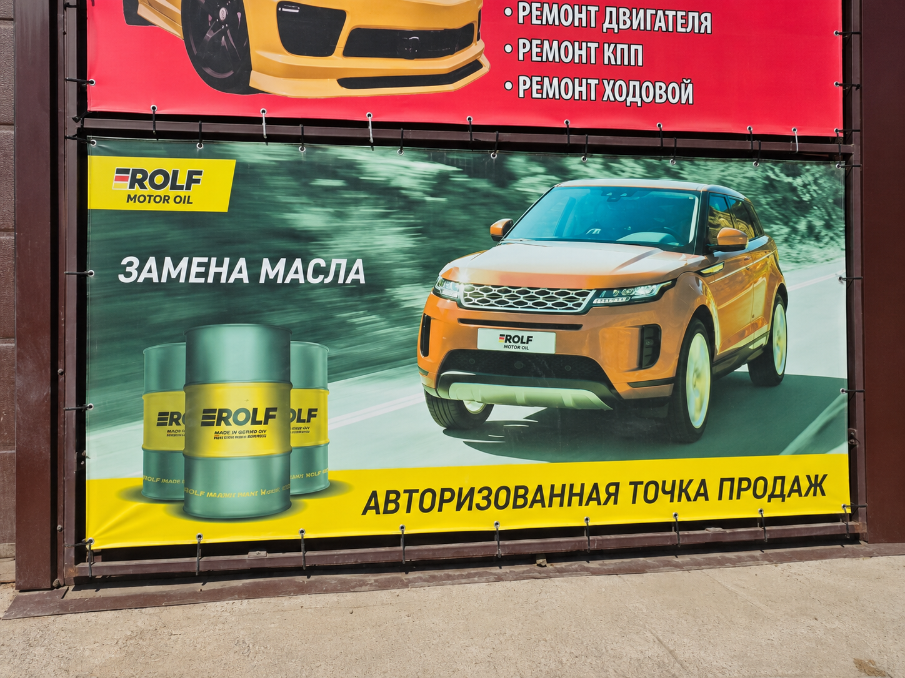
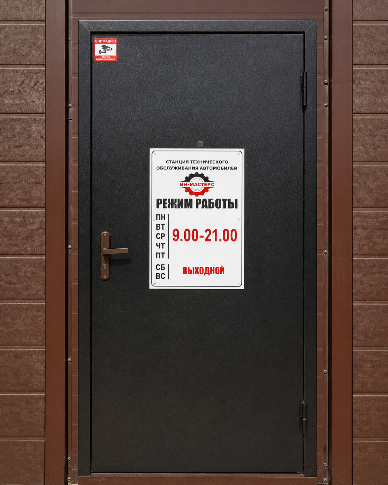
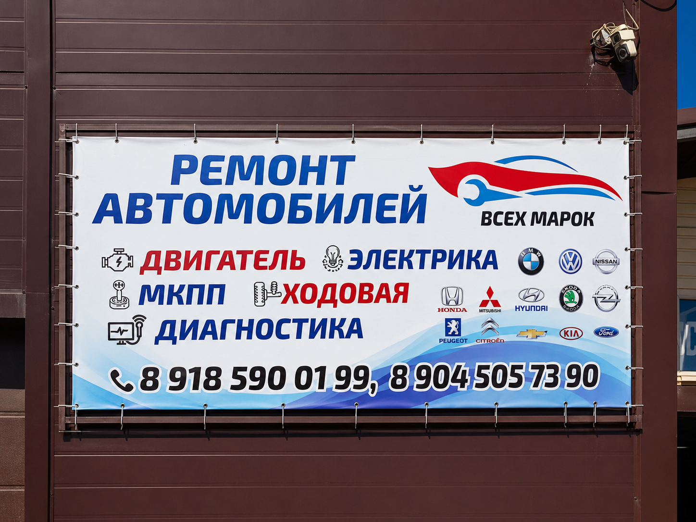

Подвеска стучит или машину уводит в сторону
Проверим ходовую и рулевое управление, покажем источник люфта или шума.
Описать проблемуПроверяем автомобиль, объясняем причину неисправности, согласовываем работы и только после этого начинаем ремонт.
Начнём с симптома
Не нужно заранее знать название неисправности. Опишите, как ведёт себя автомобиль, — мастер уточнит детали и предложит порядок проверки.
Проверим ходовую и рулевое управление, покажем источник люфта или шума.
Описать проблемуСчитаем коды, проверим связанные системы и найдём причину, а не только сбросим индикатор.
Описать проблемуСверим регламент, состояние расходников и согласуем только необходимые работы.
Описать проблемуПроверим герметичность и работу климатической системы до заправки.
Описать проблемуЛокализуем шум на диагностике и объясним, насколько срочно нужен ремонт.
Описать проблемуВыполним шиномонтаж и проверим ключевые жидкости, АКБ и тормозную систему.
Описать проблемуОсновные направления
От первичной диагностики и подбора запчастей до ремонта, контрольной проверки и рекомендаций после выдачи.

Компьютерная и инструментальная диагностика с понятным выводом.
Оставить заявку
Регламентные работы, фильтры, жидкости и контроль состояния.
Запросить расчёт


Поиск причины, дефектовка, согласование и контроль результата.
Запросить расчёт
Диагностика, масло, сцепление и механическая часть.
Описать проблему
Смена колёс, балансировка и подготовка автомобиля к сезону.
Оставить заявку
Оригинал или качественный аналог с согласованием цены.
Запросить подборТакже выполняем: обслуживание кондиционеров, ремонт рулевого управления, тормозной системы и другие работы после диагностики.

Техническое обслуживание
Подбираем масло по допускам производителя, согласуем стоимость и меняем фильтры и расходники в сервисе.
Понятный процесс
Каждый этап заканчивается понятным результатом. К работам переходим только после согласования состава и стоимости.
Вы описываете автомобиль и симптомы.
Уточняем задачу и согласуем визит.
Проверяем системы и фиксируем причины.
Предлагаем работы и варианты запчастей.
Выполняем только согласованный объём.
Объясняем результат и дальнейший уход.
Без громких обещаний
Сервис строится на понятных договорённостях, личной ответственности мастера и прозрачном заказ-наряде.
Сначала диагностика и смета, затем ваше решение.
Объясняем, что нашли и почему предлагаем работу.
Состав работ и гарантийные условия — в заказ-наряде.
Предлагаем оригинал или качественный аналог под бюджет.
Подтверждаем время визита вместо живой очереди.
Можем зафиксировать ключевые этапы ремонта.
Без постановочных обещаний
Показываем вход, наружные ориентиры и рабочую часть сервиса без фальшивых картинок.




До начала работ
На сайте указаны ориентиры. Точную смету согласуем после диагностики автомобиля.
| Направление | Стоимость от | Что важно |
|---|---|---|
| Диагностика | 1 200 ₽ | Компьютерная и первичная механическая проверка |
| Техническое обслуживание | 4 500 ₽ | Без стоимости расходников |
| Шиномонтаж | 2 200 ₽ | Комплекс для легкового автомобиля |
| Ходовая часть | 3 500 ₽ | Зависит от состояния и состава узлов |
| Двигатель | 5 000 ₽ | После диагностики или дефектовки |
| Автоэлектрика | 2 000 ₽ | По результатам поиска неисправности |
Один заказ — одна ответственность
Подберём оригинал или качественный аналог, согласуем цену до заказа и установим в сервисе.


Проверяемые внешние источники
Актуальные отзывы, оценки и маршрут до сервиса смотрите во внешних картах.
Программа лояльности
Чем регулярнее обслуживается автомобиль, тем выгоднее становятся работы и запчасти.
Базовая скидка на работы и запчасти
Для клиентов, которые обслуживают автомобиль регулярно
Повышенная выгода и приоритетная запись при свободных окнах
Максимальная скидка для постоянных клиентов сервиса
Условия программы и применение скидки уточняются при записи. Скидки не суммируются с отдельными спецпредложениями, если иное не согласовано.
Специализация шире списка
Европейские, корейские, японские, российские и китайские автомобили.
Если вашей марки нет в списке, уточните возможность обслуживания по телефону.
Следующий шаг
Мастер уточнит симптомы и предложит ближайшее подходящее время для диагностики.
Контакты VN-MASTERS
Адресул. Стартовая 1/1, Ростов-на-Дону
Телефоны+7 (863) 260-03-45
+7 (904) 505-73-90
+7 (918) 590-01-99
Режим работыРежим работы уточняйте по телефону